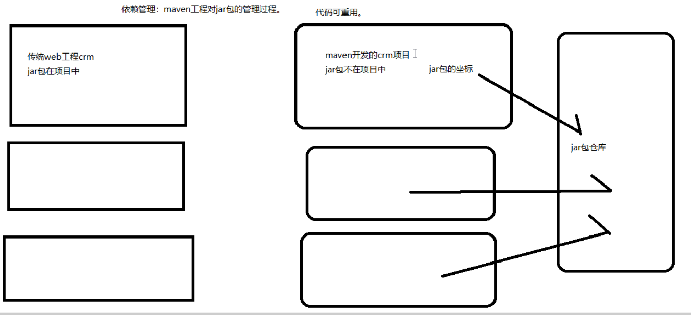
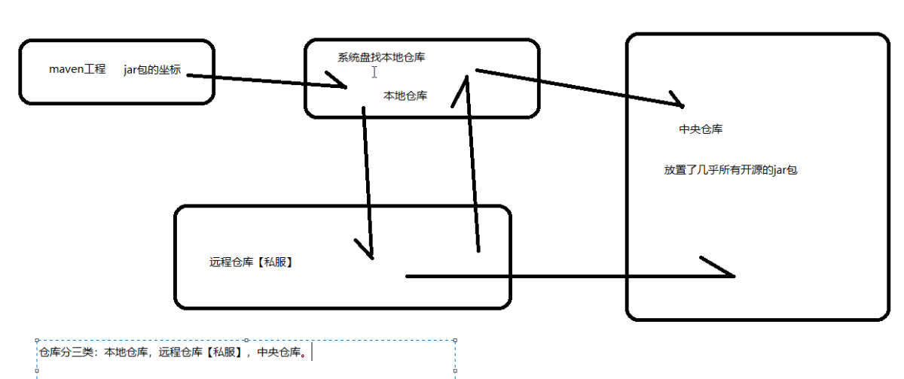
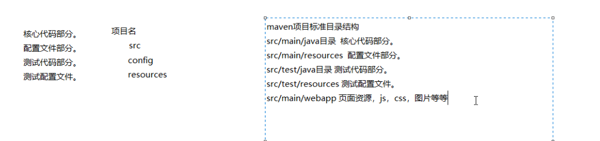
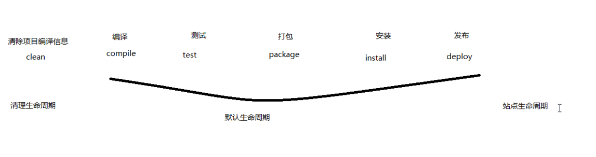
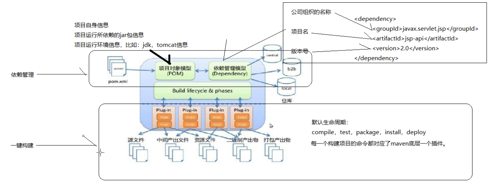

Maven
Maven的概述
Maven 的正确发音是[ˈmevən]，而不是“马瘟”以及其他什么瘟。Maven 在美国是一个口语化的词 语，代表专家、内行的意思。 一个对 Maven 比较正式的定义是这么说的：Maven 是一个项目管理工具，它包含了一个项目对象模 型 (POM：Project Object Model)，一组标准集合，一个项目生命周期(Project Lifecycle)，一个依赖管 理系统(Dependency Management System)，和用来运行定义在生命周期阶段(phase)中插件(plugin)目标 (goal)的逻辑。
什么是Maven
Maven是一个采用纯java编写的开源项目管理工具，Maven采用了一种被称之为Project Object Model(POM)概念来管理项目，所有的项目配置信息都被定义在一个叫做POM.xml的文件中
Maven是一款java编写的开源的，跨平台的项目管理工具
Maven主要服务于基于Java平台的项目构建，依赖管理和项目信息管理…
POM怎么理解呢？
- 我们使用Java是面向对象编程，对象就是我们的类
- 而Maven是面向项目，把我们的项目看做成是一个对象来进行管理
为什么要使用Maven？
Maven可以帮我们很好的解决jar包在项目中臃肿的问题，万一硬盘坏了，那我的jar包又要重新去找了，jar包的各种版本问题，会消耗我们大量的时间。
Maven可以管理项目的整个生命周期
清除–> 编译–>测试–>报告–>打包（jarwar）–>安装–>部署
maven依赖管理的概念

仓库种类和彼此关系

maven标准目录结构

maven生命周期

maven概念模型图
